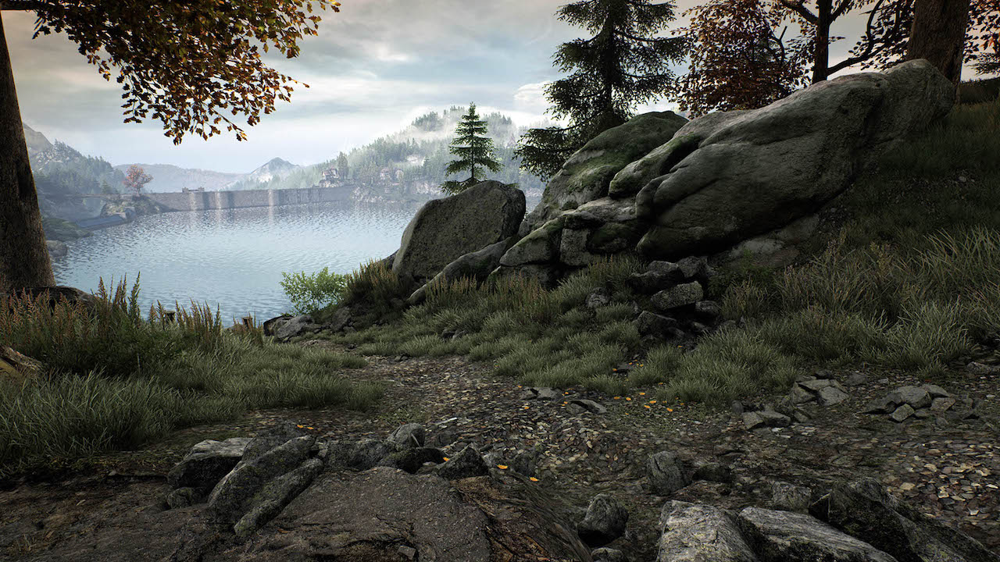

7 stycznia 2018
Adrian Chmielarz z warszawskiego studia The Astronauts ogłosił wczoraj, że już za dwa tygodnie posiadacze konsoli Microsoftu wreszcie będą mogli zagrać w Zaginięcie Ethana Cartera.

Dla przypomnienia, jest to gra z gatunku walking simulator, gdzie w przerwie pomiędzy podziwianiem wspaniałych krajobrazów Red Creek Valley wcielamy się w detektywa Paula Prospero, który próbuje rozwiązać zagadkę zniknięcia tytułowego dwunastolatka. Gra jest debiutem byłych pracowników People Can Fly i początkowo ukazała się jesienią 2014 roku na komputery PC, by niemal rok później trafić także na PlayStation 4.
Użytkownikom platformy Xbox One przyszło czekać najdłużej, ale w zamian otrzymają oni najbogatszą wersję. Do gry dołączony został tryb Free Roam, dzięki któremu Zaginięcie Ethana Cartera dosłownie staje się symulatorem chodzenia. Ze środowiska gry znikają wtedy wszelkie napisy, ślady krwi, czy inne tropy, które w normalnym trybie prowadziły nas do rozwiązania zagadki. Zostaje wyłącznie piękne otoczenie Red Creek Valley, a zadaniem gracza jest wyłącznie chodzenie, podziwianie i zapewne… fotografowanie (przyznać się, kto nie robił screenshotów grając w Ethana).
Całość oczywiście w rozdzielczości 4K, ale prawdopodobnie bez 60 fpsów, gdyż Astronauci wspominają na swoim blogu, że gracze, którym bardziej zależy na "jedwabiście gładkiej" animacji, powinni zmienić w opcjach rozdzielczość na 1080p.